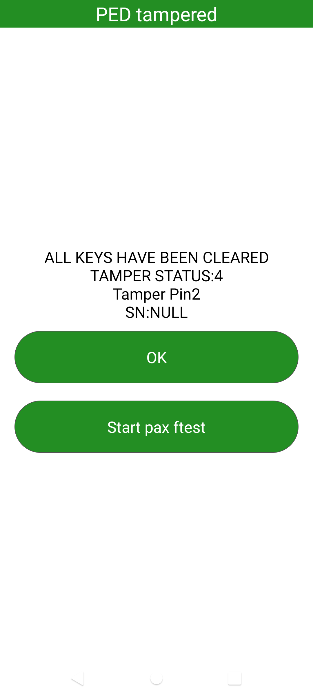

README
高通平台,see架构编译sensor源码
编译环境
需要有HEXAGON_Tools
/opt/Qualcomm/HEXAGON_Tools/8.2.05/
源码
源码内容如下

编译
清除
./build_qcm2290.sh adsp -c
编译
./build_qcm2290.sh adsp
使用
使用个人签名
把编译出来的
./ADSP.VT.5.4.1/adsp_proc/obj/qdsp6v5_ReleaseG/agatti.adsp.prod/LA/system/etc/firmware/路径下所有的adsp文件,拷贝到源码的A6650_Unpacking_Tool/ADSP.VT.5.4.1/adsp_proc/obj/qdsp6v5_ReleaseG/agatti.adsp.prod/LA/system/etc/firmware/目录如果不起效,可以替换全部
复制ADSP.VT.5.4.1/adsp_proc/obj/qdsp6v5_ReleaseG/agatti.adsp.prod/* 到 A6650_Unpacking_Tool/ADSP.VT.5.4.1/adsp_proc/obj/qdsp6v5_ReleaseG/agatti.adsp.prod/
替换到固件目录
把编译出来的
./ADSP.VT.5.4.1/adsp_proc/obj/qdsp6v5_ReleaseG/agatti.adsp.prod/LA/system/etc/firmware/路径下所有的 adsp文件,拷贝到源码的UM.9.15/vendor/qcom/proprietary/prebuilt_HY11/target/product/bengal/vendor/firmware/目录配置上报数据的polling或者中断方式
在源码的 UM.9.15/vendor/qcom/proprietary/sensors-see/registry/config/bengal/agatti_qmi8658_0.json 文件修改
调试
adb push ADSP.VT.5.4.1\adsp_proc\obj\qdsp6v5_ReleaseG\agatti.adsp.prod\LA\system\etc\firmware\adsp* /vendor/firmware/